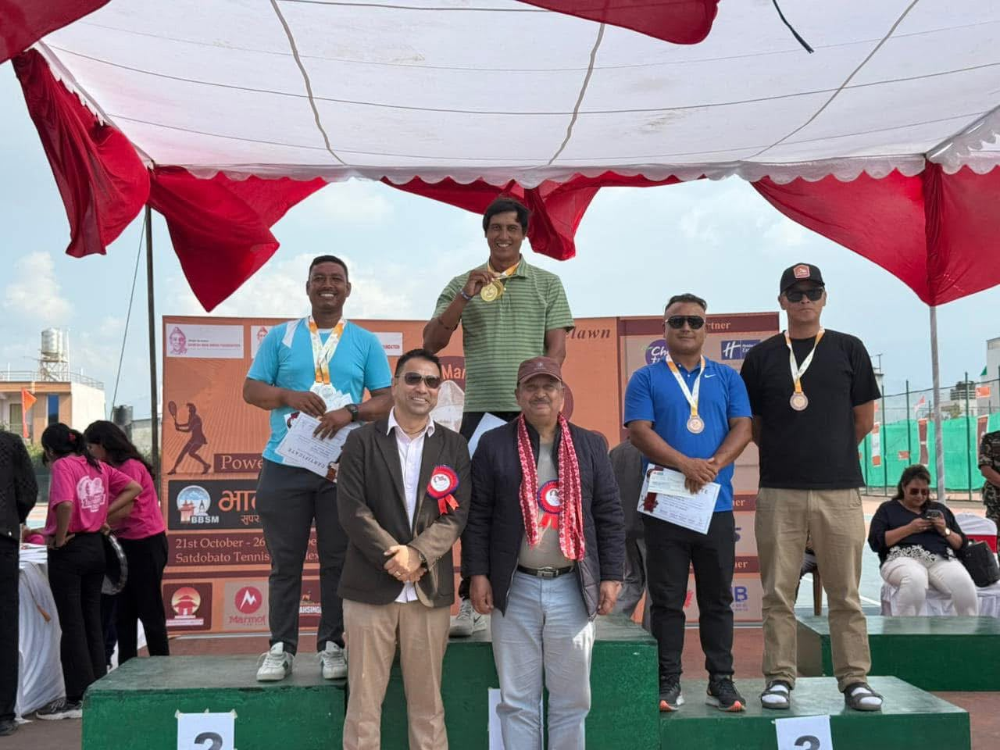
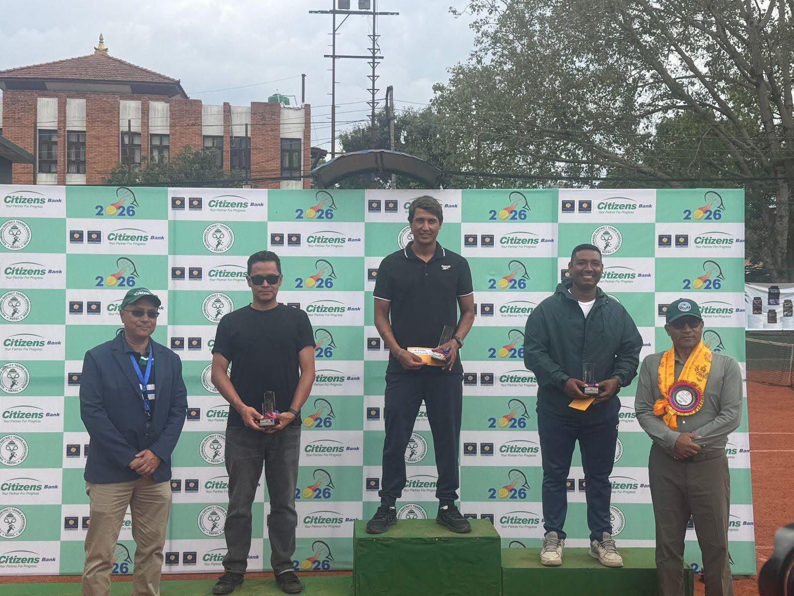
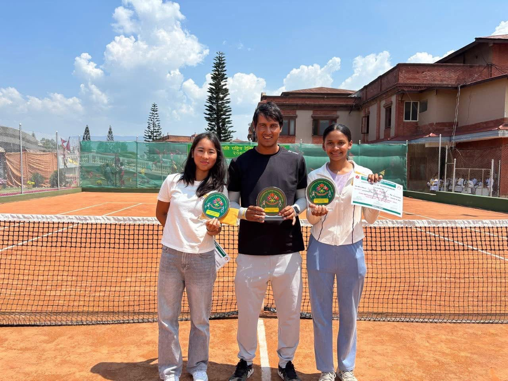
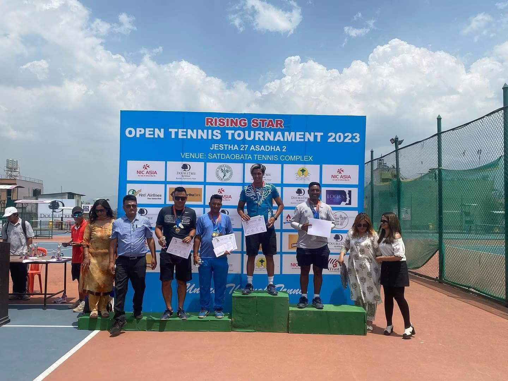
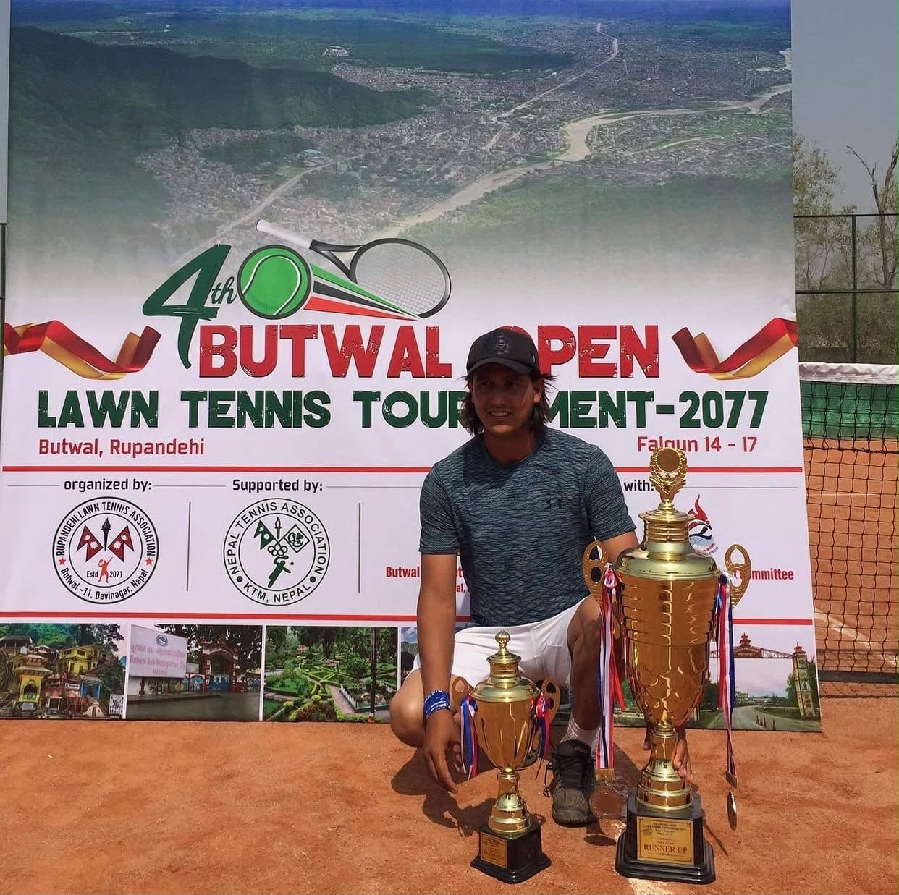

Fundamentals
Technique that lasts
Strong attention to grip, movement, timing, and court awareness forms the basis of confident tennis performance.
Kathmandu, Nepal
Santosh Khatri is a trusted tennis coach in Kathmandu, Nepal, helping players and parents build confidence through strong fundamentals, focused practice, and clear communication.

Professional tennis coaching grounded in disciplined training and clear guidance.
Focused improvement in technique, movement, and match confidence for players at all stages.
Quick, direct coaching conversations by phone for parents and adult players.
Professional profile
Santosh Khatri is a tennis coach based in Kathmandu, Nepal, known for a practical, disciplined approach to player development. His coaching supports both parents seeking structured guidance and adult players looking to build confidence on court.
The focus remains on fundamentals, court awareness, and consistent improvement, delivered in a supportive environment where progress feels clear and achievable.
Coaching focus
Strong attention to grip, movement, timing, and court awareness forms the basis of confident tennis performance.
Players learn to stay composed, read situations better, and apply fundamentals with more confidence during play.
Parents and adult players can contact Santosh directly by phone for clear guidance and practical next steps.
Career Highlights & Awards
| Period | Tournament Name | Venue | Award |
|---|---|---|---|
| 2011 | Samari Slam Superstar | Hetaduda, Nepal | Finalist |
| 2010 | Professional Tennis Registry Open Tennis Tournament | New Delhi, India | Winner |
| 2010 | Pokhara Open Tennis Tournament | Pokhara, Nepal | Quarter Finalist |
| 2009 | National Open Men’s Tennis Tournament | Satdobato Stadium, Kathmandu, Nepal | Semi-finalist |
| 2008 | 5th Grand National Games | Kathmandu, Nepal | Quarter Finalist |
| 2006 | Band B Open Tennis Tournament | Pokhara, Nepal | Quarter Finalist |
| 2005 | Nepal Korea Open Tennis Tournament | International Club, Sanepa, Kathmandu, Nepal | Winner |
| 2005 | Hyatt Real Activ Tennis Tournament | Kathmandu, Nepal | Finalist |
| 2004 | International Club Men’s Open Tennis Tournament | International Club, Sanepa, Kathmandu, Nepal | Winner |
| 2004 | 18 and under Boys National Junior Open Tournament | National Stadium, Kathmandu, Nepal | Winner |
Education
Completed from Shree Navajyoti Secondary School, Kathmandu.
Completed from Nepal Police School, Kathmandu.
Completed from [College Name], Kathmandu.
Work Experience
As a coach, I train students in individual and group lessons to improve their skills, increase self-confidence, and help them become more independent. I prepare personalized lessons based on each student’s level and needs.
Delivered tennis instruction and supported player development in a professional setting.
Developed specific programmes to improve each student’s skills while increasing self-confidence and independence. I evaluated coaching outcomes, taught the basic principles of the sport, rules of the game, and both basic and advanced techniques. I planned and organized tennis tournaments for club members and open tournaments, and scheduled, organized, and participated in practices and matches.
Conducted tennis classes for all age groups. I maintained and operated equipment, supplies, and facilities, and implemented the tennis programme.
Conducted tennis classes for children in primary and secondary levels and supported maintenance of equipment and supplies.
Participated in practice matches as a hitting partner for tennis students.
Photo gallery




Get in touch
Certification
Certified: Associate Instructor #63446
Received in New Delhi, India